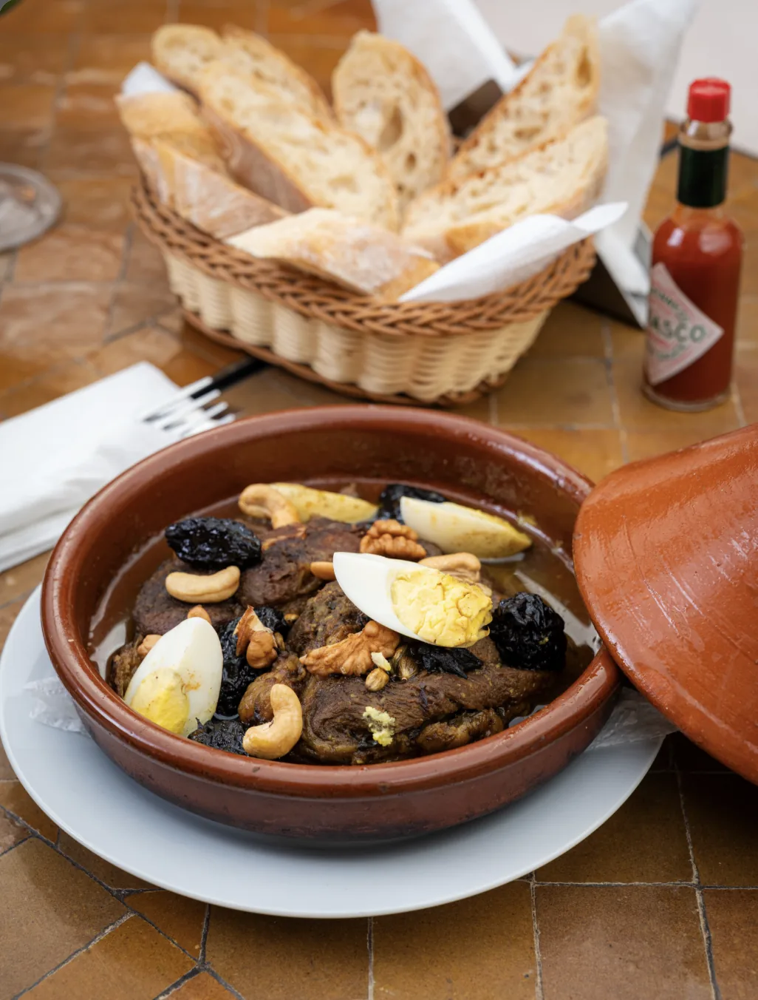
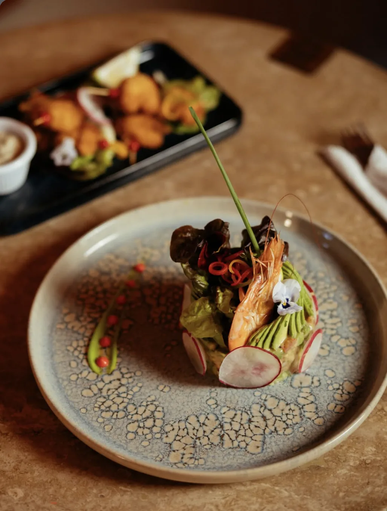
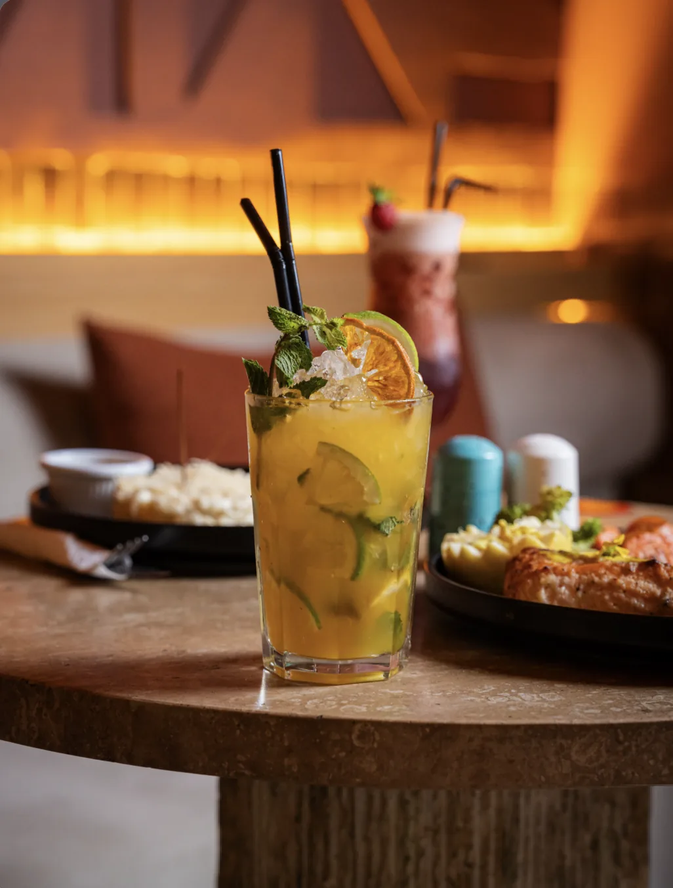
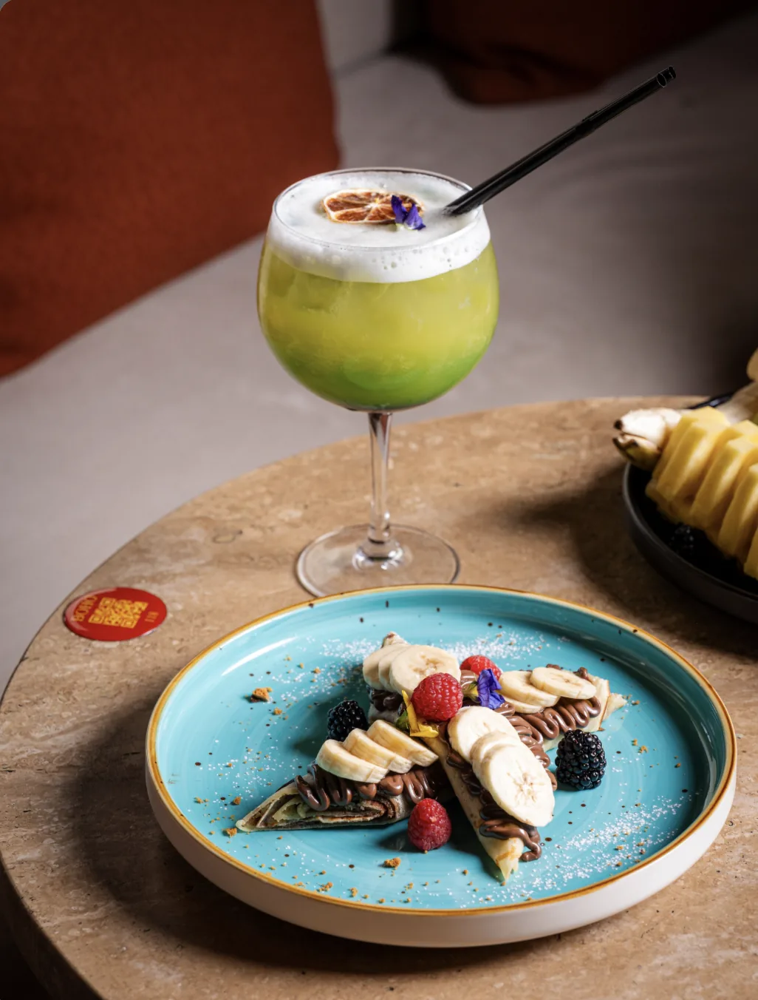
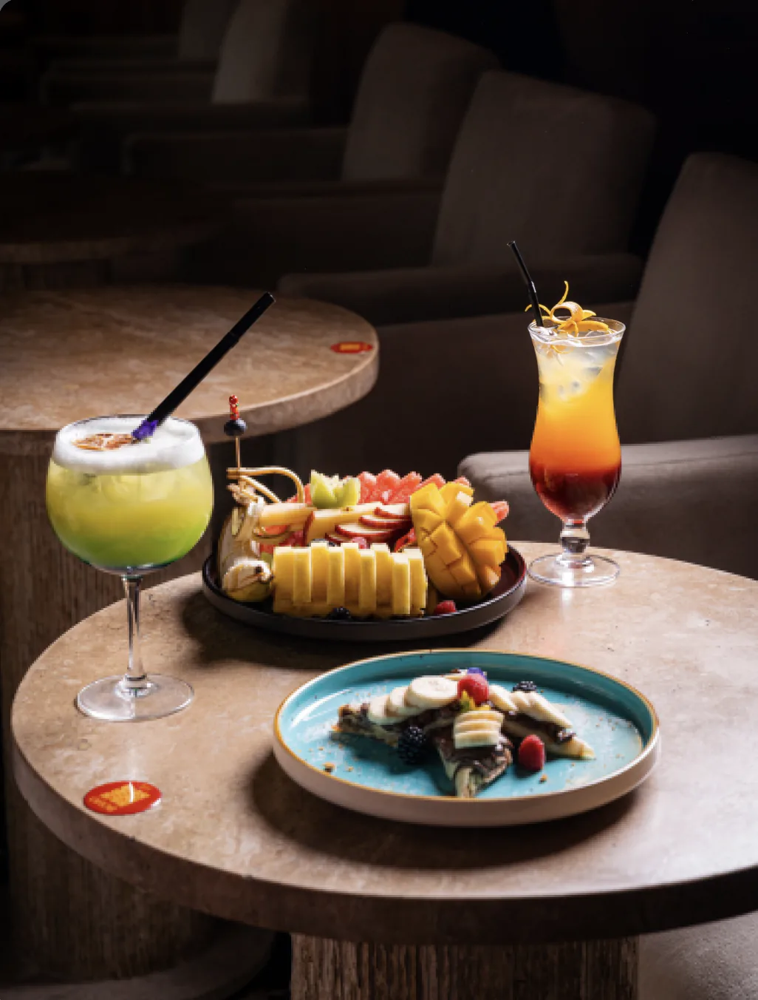
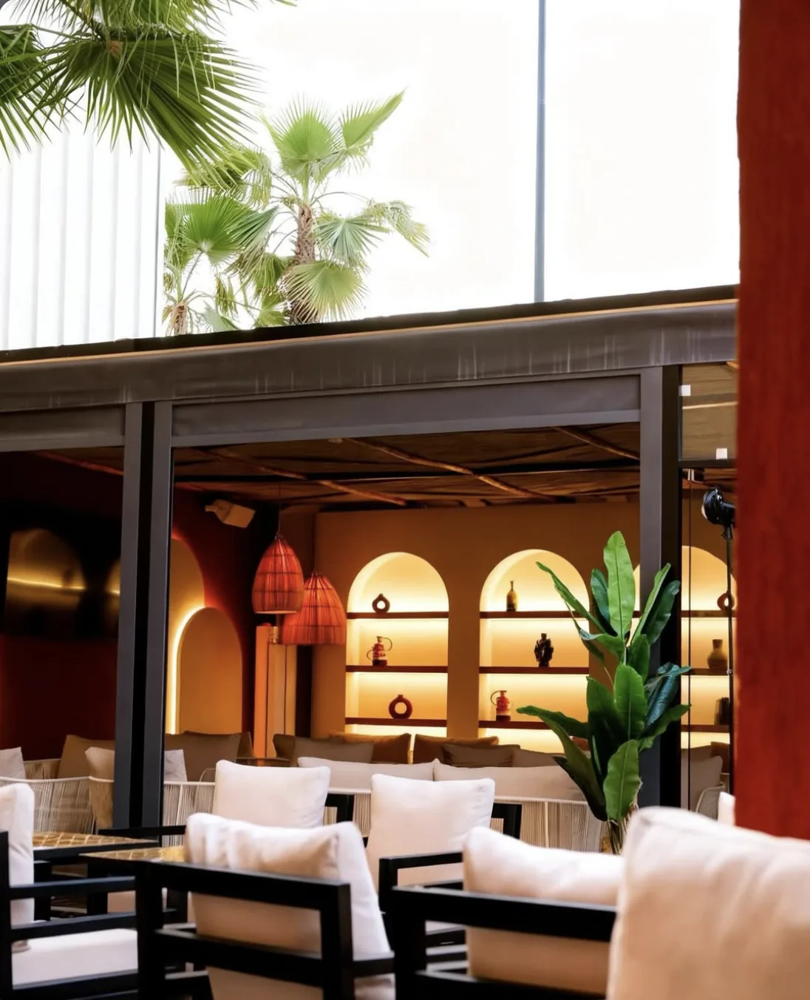
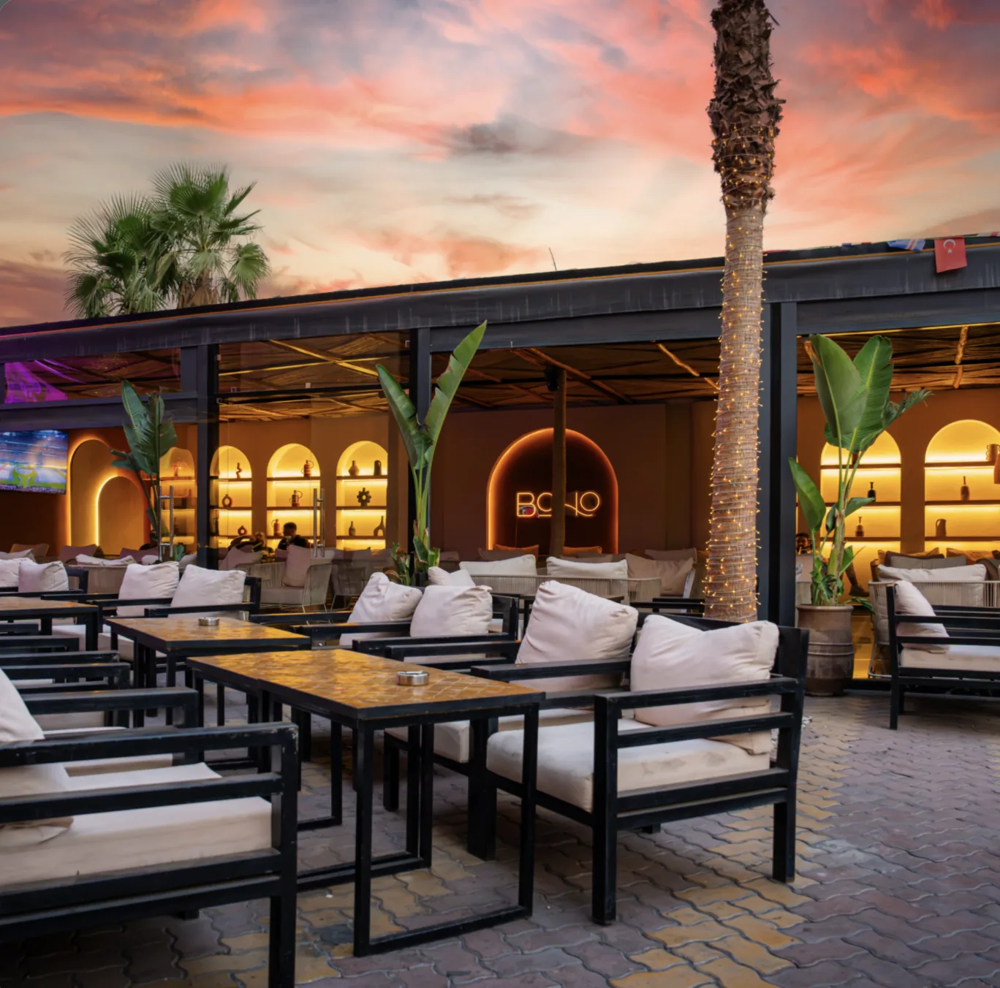
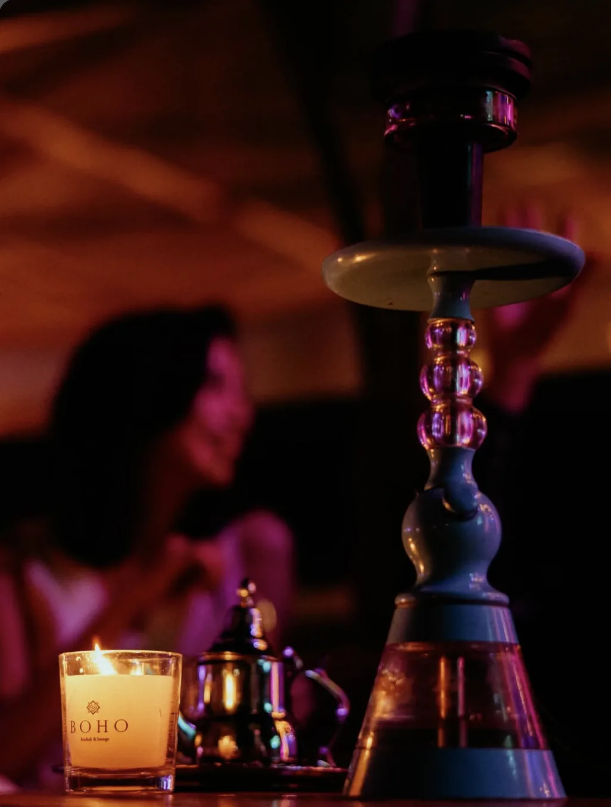
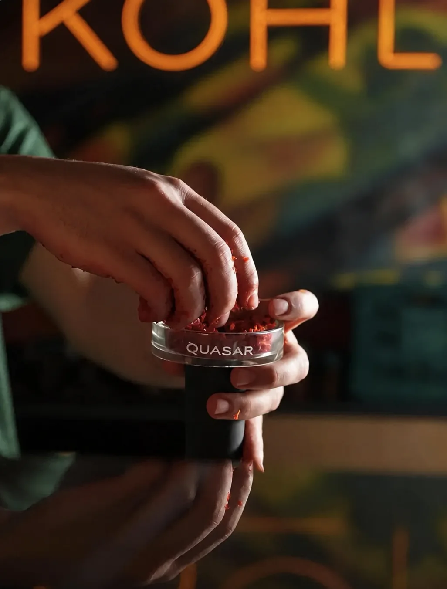
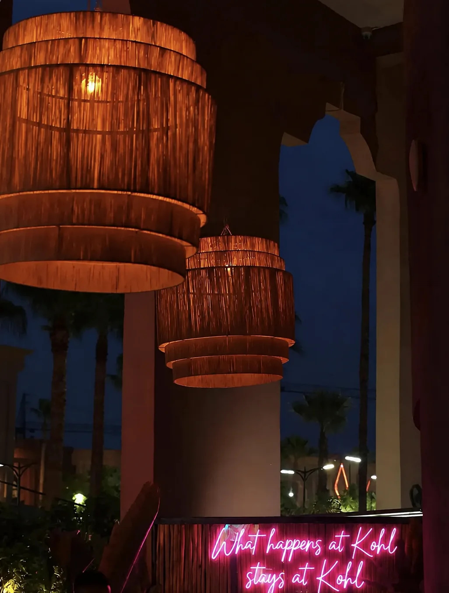

Restaurant · Lounge · Chicha
Entrez à midi.
Restez jusqu'à 4h.
Déjeuner, terrasse chauffée, bar et longues nuits. Route de Fès, Palmeraie, Marrakech.
RéserverOn passe à table.
Des assiettes généreuses, des saveurs variées et tout ce qu'il faut pour partager un vrai moment.

Tajine aux pruneaux
Bœuf fondant, pruneaux, fruits secs, œuf.

Tartare d'avocat
Avocat, crevettes, herbes fraîches.

Cocktail passion
Fruit de la passion, agrumes, glace.

Crêpe banane Nutella
Banane, Nutella, fruits rouges.

Salade de fruits
Fruits frais, préparée sur place.
Et la carte continue. On vous la présente à table.
Réserver pour le déjeunerLa meilleure terrasse de Marrakech.
Terrasse chauffée sous les palmiers. Le soleil descend, les lumières s'allument, et personne ne se lève.


21h. Le soleil s'est couché.
Marrakech ne dort jamais. KOHL non plus.
Dîner, musique et chicha, tous les soirs jusqu'à 4h du matin.
Après minuit, la lumière baisse.
La chicha, les bougies, les fauteuils profonds. Ici, la soirée prend son temps.


Il est 4h. On vous garde une table demain ?
Ouvert tous les jours de 12h à 4h. Route de Fès, Palmeraie, Marrakech.
